Text-to-video generation has shown promising results. However, by taking only natural languages as input, users often face difficulties in providing detailed information to precisely control the model’s output. In this work, we propose fine-grained controllable video generation (FACTOR) to achieve detailed control. Specifically, FACTOR aims to control objects' appearances and context, including their location and category, in conjunction with the text prompt. To achieve detailed control, we propose a unified framework to jointly inject control signals into the existing text-to-video model. Our model consists of a joint encoder and adaptive cross-attention layers. By optimizing the encoder and the inserted layer, we adapt the model to generate videos that are aligned with both text prompts and fine-grained control. Compared to existing methods relying on dense control signals such as edge maps, we provide a more intuitive and user-friendly interface to allow object-level fine-grained control. Our method achieves controllability of object appearances without finetuning, which reduces the per-subject optimization efforts for the users. Extensive experiments on standard benchmark datasets and user-provided inputs validate that our model obtains a 70% improvement in controllability metrics over competitive baselines.
Background
Text-to-video generation [Villegas et al., 2022] has limited controllable ability through user-provided prompts. Even when the users augment the text prompt with additional description, the model has difficulty controlling the precise movement and appearance of the object. Text-to-Video+ControlNet [Zhang et al., 2023] achieves promising visual quality while requiring dense control signals extracted from a reference video. FACTOR (Ours) improves the controllability through user-friendly inputs to control the: 1) precise movement of subjects through hand-drawing trajectory and 2) visual appearance by providing reference examples.
Approach
Our method has three main components: a) Joint encoder and adaptive cross-attention: a joint encoder is learned to encode the prompt and control to capture the interaction between them. The adaptive layers are inserted into the transformer blocks of the text-to-video model to take new control signals. Only the inserted layers are optimized to adapt the model to generate videos satisfying the fine-grained control. b) Condition encoding: given T time steps, the embedding of control at time t is formed by the control for N entities, where padding tokens replace the embedding of the non-existing entity. c) Entity control: the control for entity n at time t is formed by the embedding of the context, i.e., the description, location, and reference appearance of the objects.
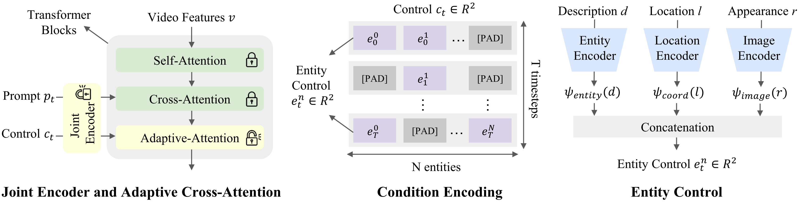
User Interface
Our goal is to provide a user-friendly, controllable video generation framework that addresses fine-grained control. We present an illustration of the user interface of FACTOR. Click to play the video.
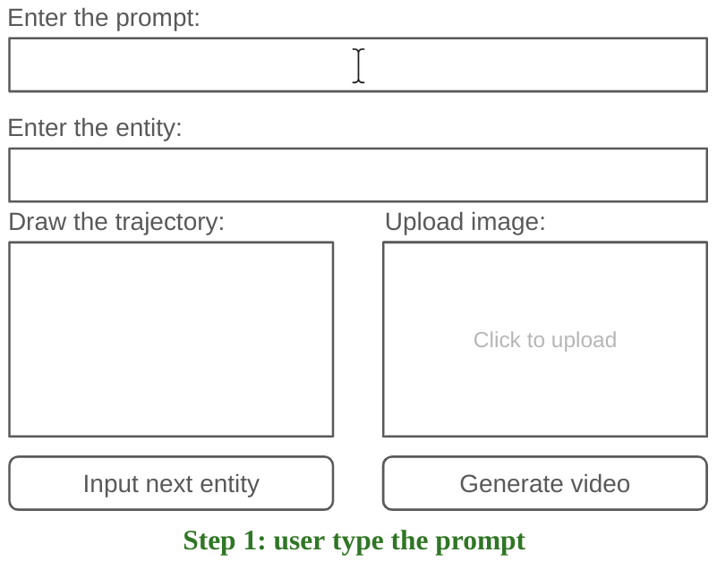
Results of Trajectory Control
FACTOR generates videos that align with the hand-drawn input trajectories of the entities. Furthermore, it brings an additional benefit of producing complex videos with interactions and relations. Click to play the following videos.
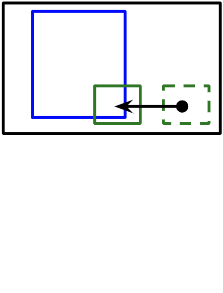
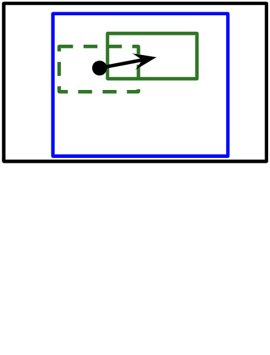
An astronaut feeding ducks on a sunny afternoon, reflection from the water.
A panda taking a selfie.
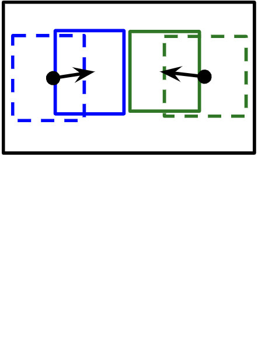
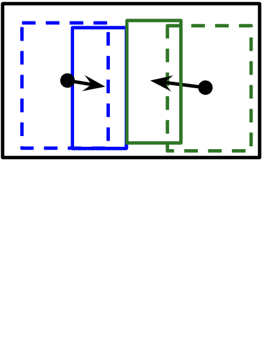
A panda pillow fighting with Santa Claus in a golden wheat field.
A motorcyclist high-fiving with a monkey on the shore.
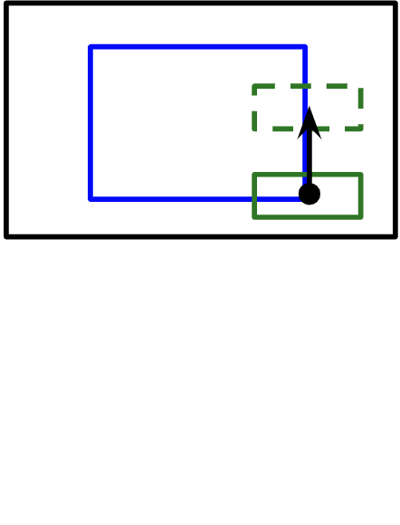
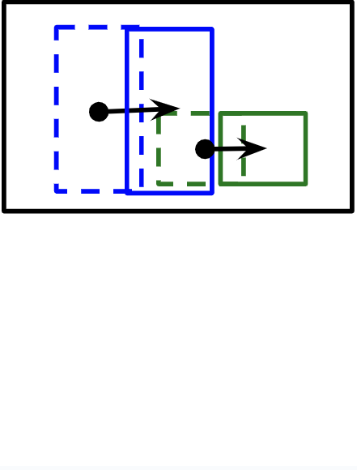
An elephant picking up a teddy bear on the floor in the room.
A bear pushing the shopping cart on the street.
Results of Appearance Control
FACTOR generates subjects aligned with the reference appearance images, producing videos with interactions and composition. Our method is finetuning-free and utilizes only one reference image per subject. Click to play the following videos.
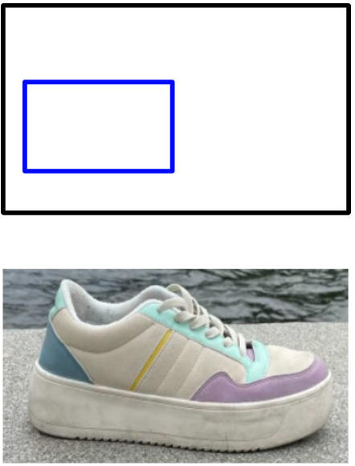
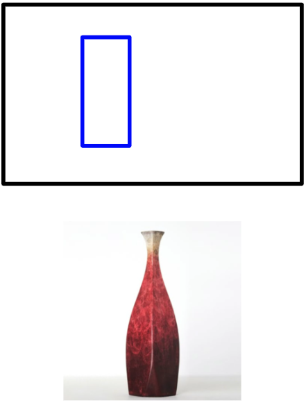
A foot in a sks shoe walking on the road.
Milk poured into a sks vase.
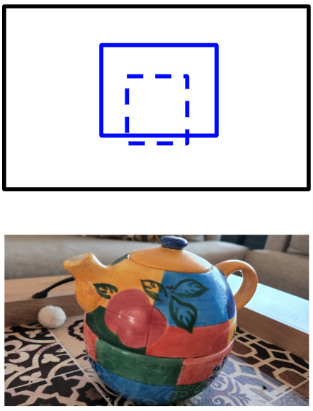
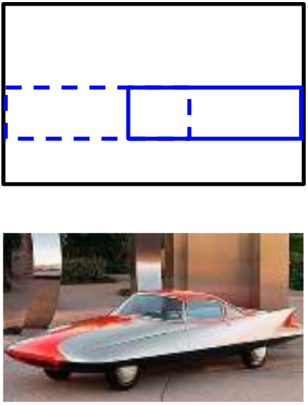
A sks tea pot on top of a building in New York, drone flight, 4k.
A sks car driving in Manhattan.
BibTex
@article{huang2023factor,
title={Fine-grained Controllable Video Generation via Object Appearance and Context},
author={Huang, Hsin-Ping and Su, Yu-Chuan and Sun, Deqing and Jiang, Lu and Jia, Xuhui and Zhu, Yukun and Yang, Ming-Hsuan},
journal={arXiv preprint arxiv:},
year={2023}
}